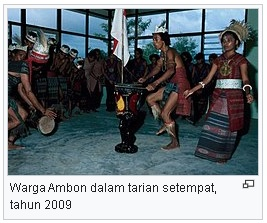
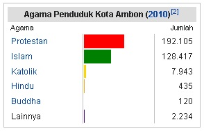
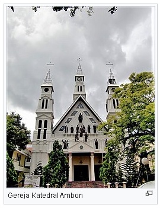

Demografi
Suku bangsa

Kota Ambon merupakan kota yang majemuk karena memiliki penduduk yang berasal dari berbagai suku bangsa, agama,
dan
ras. Sebagian besar masyarakat Ambon berasal dari suku Ambon dan suku setempat. Meskipun demikian, persatuan
keberagaman ini pernah diguncang oleh beberapa pertikaian politik yang menimbulkan kerusuhan besar dengan
mengikusertakan agama seperti pada 1999. Pada tahun 2016, jumlah penduduk Kota Ambon diperkirakan
mencapai
427.934 jiwa yang menjadikan Kota Ambon sebagai kota terbesar di provinsi dengan sumbangan penduduk sebesar
24,9%.
Menurut Sensus Penduduk tahun 2010, sebesar 92,4% masyarakat bertempat tinggal di kawasan perkotaan, sedangkan
sisanya
di kawasan perdesaan.
Suku mayoritas di kota ini adalah suku Ambon, suku yang mendiami Pulau Ambon dan pulau sekitarnya yang merupakan
keturunan suku Alifuru.Kota ini pun memiliki penduduk dari berbagai macam suku bangsa karena kota ini telah
dinominasikan menjadi kota terbuka bersama dengan 29 kota lainnya di Indonesia. Selain itu, keberagaman suku
bangsa
kota disebabkan oleh Maluku yang menjadi daerah tujuan transmigrasi. Untuk menjaga kebhinekaan suku bangsa
yang
mendiami kota agar tetap harmonis dan menegaskan bahwa Kota Ambon ini kota paling toleran serta terbuka,
pemerintah kota
membangun perkampungan multietnis. Selain suku Ambon, kota ini juga dihuni oleh etnis lainnya, seperti Arab,
Buton,
dan Tionghoayang pada mulanya datang untuk berdagang. Di samping itu, terdapat pula suku Minahasa, Jawa,
dan
Minang yang telah lama datang ke Ambon.
Agama

 Menurut Kanwil Kementerian Agama Provinsi Maluku, pada tahun 2010 kelompok agama terbesar di Kota Ambon adalah
Kristen yakni 60,39% yang terbagi menjadi Protestan sebanyak 57,99% dan Katolik sebanyak 2,40%. Kemudian diikuti
dengan agama Islam sebanyak 38,77%, selanjutnya Hindu sebanyak 0,13%, Buddha sebanyak 0,04%, serta Konghucu dan
lainnya sebanyak 0,67%.
Menurut Kanwil Kementerian Agama Provinsi Maluku, pada tahun 2010 kelompok agama terbesar di Kota Ambon adalah
Kristen yakni 60,39% yang terbagi menjadi Protestan sebanyak 57,99% dan Katolik sebanyak 2,40%. Kemudian diikuti
dengan agama Islam sebanyak 38,77%, selanjutnya Hindu sebanyak 0,13%, Buddha sebanyak 0,04%, serta Konghucu dan
lainnya sebanyak 0,67%.
Kota Ambon merupakan kota mayoritas Kristen Protestan. Pada tahun 2021, terdapat 294 gereja Protestan dan 39
gereja Katolik di Kota Ambon. Bangunan gereja Protestan terbesar adalah GPM Maranatha, sedangkan bangunan
gereja Katolik terbesar adalah Katedral Santo Franciscus Xaverius. Selain itu pun, ada pula GPM Silo yang
menjadi salah satu gereja Protestan utama Kota. Mayoritas masyatakat Protestan kota merupakan jemaat Gereja
Protestan Maluku (GPM). Ambon pun memiliki keuskupan Katolik Romanya tersendiri, yaitu Keuskupan Amboina.
Kecamatan yang memiliki agama mayoritas Kristen adalah Nusaniwe, Baguala, dan Leitimur Selatan dengan Protestan
menjadi agama mayoritas.

Kota juga memiliki jumlah pemeluk agama Islam yang besar, yakni 38,77% dari penduduk kota, bedasarkan sensus
2010. Rumah ibadah penduduk yang beragama Islam tahun 2021 sebanyak 168 masjid, salah satu yang terbesar di
kota Ambon adalah Masjid Raya Al-Fatah, sedangkan masjid tertua di kota adalah Masjid Jami Ambon yang dibangun
pada 1860. Kota Ambon pun merupakan penyumbang jemaah haji terbanyak di Maluku dengan jumlah jemaah 245
orang pada 2014.Kecamatan yang memiliki agama Islam sebagai agama dominannya adalah Kecamatan Sirimau dan
Teluk Ambon.
 Kota Ambon pun memiliki penduduk beragama minoritas lainnya dalam jumlah yang sangat kecil. Agama-agama tersebut
ialah Hindu, Buddha, dan Konghucu. Meskipun jumlahnya sangat kecil, ketiga agama ini diperhatikan oleh
pemerintah. Pada 2018, Presiden Joko Widodo meresmikan Hindu Center dan Buddha Center di Kota Ambon. Hal
ini dilakukan sebagai perwujudan keinginan gubernur Maluku agar Maluku menjadi laboratorium kerukunan hidup
beragama bagi Indonesia. Pura yang terkenal di kota adalah Pura Stana Giri Ciwa, sedangkan wihara yang
terkenal ialah Wihara Swarna Giri Tirta. Kota juga memiliki penganut Konghucu dengan jumlah yang sangat
kecil, yaitu 7 jiwa pada Sensus Penduduk Indonesia 2010.
Kota Ambon pun memiliki penduduk beragama minoritas lainnya dalam jumlah yang sangat kecil. Agama-agama tersebut
ialah Hindu, Buddha, dan Konghucu. Meskipun jumlahnya sangat kecil, ketiga agama ini diperhatikan oleh
pemerintah. Pada 2018, Presiden Joko Widodo meresmikan Hindu Center dan Buddha Center di Kota Ambon. Hal
ini dilakukan sebagai perwujudan keinginan gubernur Maluku agar Maluku menjadi laboratorium kerukunan hidup
beragama bagi Indonesia. Pura yang terkenal di kota adalah Pura Stana Giri Ciwa, sedangkan wihara yang
terkenal ialah Wihara Swarna Giri Tirta. Kota juga memiliki penganut Konghucu dengan jumlah yang sangat
kecil, yaitu 7 jiwa pada Sensus Penduduk Indonesia 2010.
Bahasa
Kota Ambon menjadi kota multibahasa sejak abad ke-17. Bahasa Portugis, bahasa pendatang asing pertama di
Ambon digunakan secara luas. Peninggalan bahasa Portugis masih bisa dilihat dari kata-kata serapan Portugis
dalam bahasa yang dituturkan di Ambon. Pada masa Belanda, meskipun bahasa Belanda menjadi bahasa utama dan
bahasa administrasi, bahasa Melayu Ambon atau yang lebih dikenal sebagai bahasa Ambonlah menjadi lingua franca
penduduk Pulau Ambon. Seiring perkembangan zaman, bahasa tersebut menjadi bahasa ibu penduduk pulau.
Pergeseran bahasa Indonesia dan Ambon menjadi bahasa ibu masyarakat pulau ini mengancam keberadaan puluhan
bahasa daerah bukan hanya di kota, melainkan hingga provinsi.
Dalam perihal kebahasaan, pemerintah telah melakukan beberapa upaya. Pada tahun 2015, Pemerintah Provinsi Maluku
mencanangkan dua desa di kota, yaitu Amahusu dan Batu Merah menjadi kampung bahasa. Hal ini dilakukan
pemerintah dalam rangka pengembangan kemampuan dalam bahasa dan berkomunikasi bagi masyarakat.